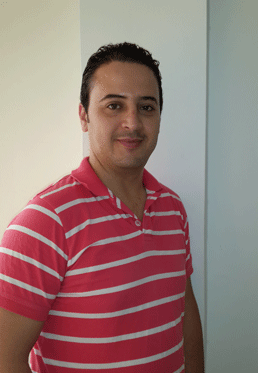

To better know me
If one can do it, i can do it.
If no one can do it, i must do it.
I'm an enthusiastic, dynamic and pro-active Web Developer who makes easy to use websites and applications by discovering how users really think.
With 4 years experience of developing websites and web applications, I have an excellent understanding of how technology can be used to align the requirements of both the business and the customer.
I’m looking for new challenges where I could use my knowledge while continuing developing it and satisfy my curiosity.
My works
Proud of it


E-Commerce Web site: Recovery training for drivers, who lost driving license points, composed of 02 parts:
- Administration: Dashboard for:
- Website configuration.
- The management of training, users, acl rules, newsletter, orders and website content.
- Management of payment methods.
- Public: frontend shop with an interactive map of French departments, integration of Google maps in the detailed description of the training and a responsive template (for all type of media mobile / tablet / desktop).
Technical environment: Php 5, html 5, css 3, jquery, bootstrap, jqvmap, mootools, ajax, joomla 2.5 and mysql
A Platform for reservation into training for the health field staff.
- Administration: Dashboard for:
- Platform configuration.
- Management of training sessions, users, newsletters, ACL rules and online registrations.
- Synchronization of training sessions, users’ accounts and registration between platform and product owners ERP (tamari06 with exchange of “xml” files and forma2i from Google spreadsheets).
- Management of online exams with detailed report by tables and graphs.
- Public: Offering users a flexible and easy navigation with advanced research and organized training subjects. Online registered users receive a confirmation e-mail containing a personnel link in order to pass their online exams.
Technical environment: Php 5, html 5, css 3, highcharts, datatable, jquery, zend gdata framework, google spreadsheet api, mootools, ajax, json, joomla 2.5, shell/bash, cron and mysql.


Orders management platform: Composed of 04 parts:
- Administration: a dashboard for managing products, orders, customer, users, ACL rules and emailing.
- Management: a dashboard with limited access for managing customer orders and complaints. It is also used for monitoring the evolution of turnover by tables and graphs.
- Synchronization: of customer accounts, customer orders and products between platform and product owner ERP through the exchange of ".txt" file with ftp account, with a well-defined structure
- Public: accessible after customer’s authentication to explore products, place and follow up their orders and make complaints.
Technical environment: Symfony2, jquery, ajax, highcharts, datatable, html, css, shell/bash, cron and mysql
Social network:
It is a project management platform. Any user can create a project and invite others as contributors to make a team. The platform offers the possibility to evaluate the contribution level of each participant, by making feedbacks.
Technical environment: Php 5, html 5, css 3, highcharts, jquery, jeazyui framework, ajax and mysql.


Educational platform:
- Administration: Dashboard for:
- Platform configuration.
- Management of courses, users, newsletters, acl rules, memberships and online exams.
- Public: accessible after authentication to let all users explore courses and different sections. To pass online exams, it requires a paid membership through the tunisian electronic payment system.
Technical environment: Php 5, html, css, jquery, ajax, json, mysql and joomla 2.5.


System of capitalization and knowledge sharing: Intranet for the personalization of content based to the user profile, his interests, skills and by tracking all his activities.
- Forum
- Share photos and video
- Adding friends, content, subject, status, faq
- Report content or users
- Management of leave
- Workflow
- Base knowledge
- Messaging
Technical environment: Php 5, html, css 3, jquery, ajax, json and mysql.
Professional social network: A web application that relates companies to professionals.
- Forum
- Share photos and video
- Adding friends, item
- Report content or users
- Creating online cv
- Base knowledge
- Messaging
Technical environment: Php 5, html, css 3, jquery, ajax, json and mysql.
Last tunisian news.
Technical environment: Php 5, html, css 3, jquery, ajax, Joomla 2.5 and mysql.


This platform is characterized by its administration that gives the possibility to administrate 32 sub-sites.
Technical environment: Php 5, html, css 3, jquery, ajax, json and mysql.
Online booking website.
- Administration: Dashboard for:
- Platform configuration.
- Management of rooms, suites, supplements, promotions, users, newsletter, acl rules and booking.
- Public: hotel presentation, contact, news, promotions and booking steps with payment through the Tunisian electronic payment system.
Technical environment: Php 5, smarty, html, css 3, jquery, ajax and mysql
Stay in touch
Others are fake